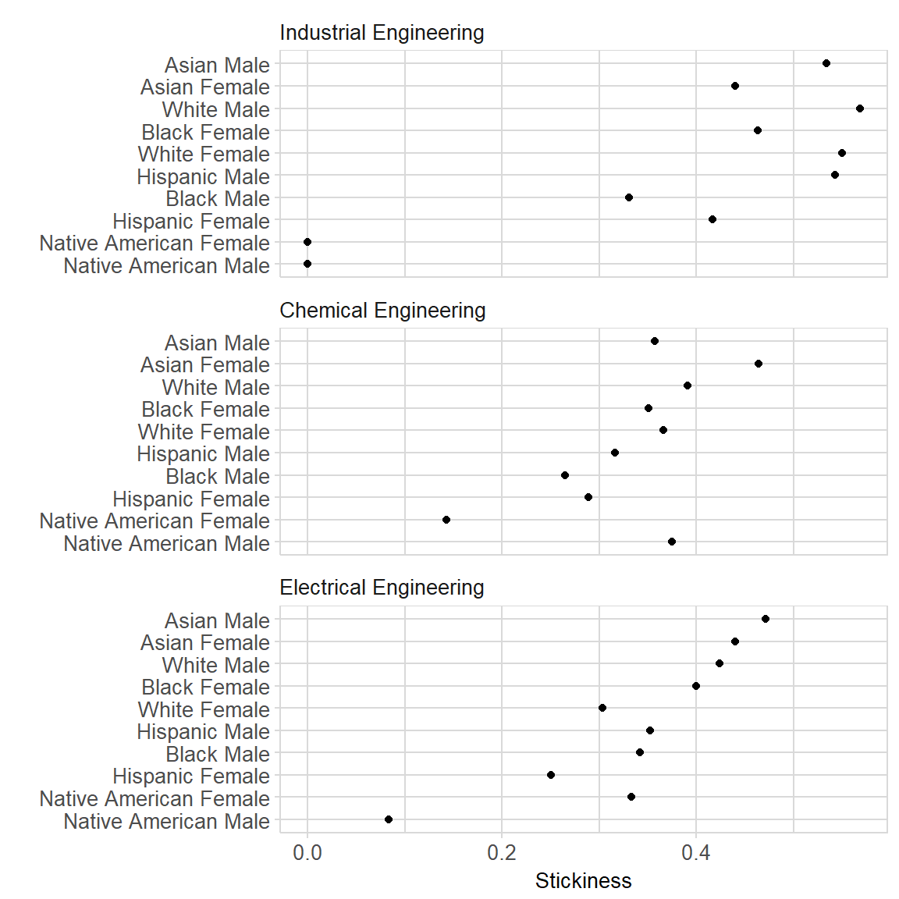

midfieldr is a package for investigating student record data provided by registrars at US universities participating in the MIDFIELD project.
A stratified sample of the MIDFIELD database is accessible using midfieldr. The sample comprises demographic, term, course, and degree information for 97,640 undergraduate students from 1987 to 2016. Because of their size, the sample datasets are provided in separate data packages.
midfieldr includes functions for selecting specific fields of study and aggregating, computing, and graphing student persistence metrics.
Installation
The development version:
install.packages("devtools")
devtools::install_github("MIDFIELDR/midfieldr")Data
The midfieldr package includes:
-
cip. A tidy data frame with 1546 observations and 6 CIP variables of program codes and names at the 2, 4, and 6-digit levels. Each observation is a unique program. Occupies 362 kb of memory.
The midfielddata package contains the four datasets that comprise a stratified sample of teh MIDFIELD database.
midfieldstudents. A tidy data frame with 97,640 observations and 15 demographic variables. Each observation is a unique student. Occupies 19 Mb of memory.midfieldcourses. A tidy data frame with 3.5 M observations and 12 academic course variables. Each observation is one course in one term for one student. Occupies 348 Mb of memory.midfieldterms. A tidy data frame with 729,014 observations and 13 academic term variables. Each observation is one term for one student. Occupies 82 Mb of memory.midfielddegrees. A tidy data frame with 97,640 observations and 5 graduation variables. Each observation is a unique student. Occupies 10 Mb of memory.
Usage
Packages used in this demonstration:
We can illustrate some of the functionality of midfieldr by demonstrating how to compute and graph the stickiness metric. Additional detail is provided in the vignettes.
“Stickiness” is the ratio of the number of students graduating from a program to the number ever enrolled in the program (Ohland et al. 2012). In this example we compare the stickiness of three engineering programs: Chemical, Electrical, and Industrial Engineering.
Select programs to study
Begin by using cip_filter() to search for engineering codes.
search_results <- cip_filter(series = "Engineering")
search_results
#> # A tibble: 122 x 6
#> CIP2 CIP2name CIP4 CIP4name CIP6 CIP6name
#> <chr> <chr> <chr> <chr> <chr> <chr>
#> 1 14 Engineering 1401 Engineering/General 1401~ Engineering - Gener~
#> 2 14 Engineering 1401 Engineering/General 1401~ Pre-Engineering
#> 3 14 Engineering 1402 Aerospace/Aeronautic~ 1402~ Aerospace/Aeronauti~
#> 4 14 Engineering 1403 Agricultural/Biologi~ 1403~ Agricultural/Biolog~
#> 5 14 Engineering 1404 Architectural Engine~ 1404~ Architectural Engin~
#> 6 14 Engineering 1405 Biomedical/Medical E~ 1405~ Biomedical/Medical ~
#> 7 14 Engineering 1406 Ceramic Sciences and~ 1406~ Ceramic Sciences an~
#> 8 14 Engineering 1407 Chemical Engineering 1407~ Chemical Engineering
#> # ... with 114 more rowsIn the CIP data, engineering program codes all start with “14”. We can use this to narrow the search.
search_results <- cip_filter(series = "^14") %>%
cip_filter(series = c("Chemical", "Electrical", "Industrial"))
search_results
#> # A tibble: 8 x 6
#> CIP2 CIP2name CIP4 CIP4name CIP6 CIP6name
#> <chr> <chr> <chr> <chr> <chr> <chr>
#> 1 14 Engineering 1407 Chemical Engineering 1407~ Chemical Engineering
#> 2 14 Engineering 1407 Chemical Engineering 1407~ Chemical and Biomole~
#> 3 14 Engineering 1407 Chemical Engineering 1407~ Chemical Engineering~
#> 4 14 Engineering 1410 Electrical/Electron~ 1410~ Electrical/Electroni~
#> 5 14 Engineering 1410 Electrical/Electron~ 1410~ Laser and Optical En~
#> 6 14 Engineering 1410 Electrical/Electron~ 1410~ Telecommunications E~
#> 7 14 Engineering 1410 Electrical/Electron~ 1410~ Electrical/Electroni~
#> 8 14 Engineering 1435 Industrial Engineer~ 1435~ Industrial Engineeri~Thus, the 4-digit CIP codes we are looking for are 1407 for Chemical Engineering, 1410 for Electrical, and 1435 for Industrial Engineering. We extract the CIP codes for each major and assign our own program label.
set1 <- cip_filter(series = "^1407") %>%
add_column(program = "Chemical Engineering")
set2 <- cip_filter(series = "^1410") %>%
add_column(program = "Electrical Engineering")
set3 <- cip_filter(series = "^1435") %>%
add_column(program = "Industrial Engineering")Combine the data frames and retain our custom program label and the 6-digit CIP codes.
For additional information, try the help page ?cip_filter() and the Selecting CIP codes vignette.
Compute the metric
Use gather_ever() to access the midfieldterms dataset and extract all students who ever enrolled in these programs.
Use race_sex_join() to access the midfieldstudents dataset and append students’ race and sex to the data frame.
Count the numbers of students grouped by program, race, and sex using the dplyr group_by() and summarize() functions.
Use zero_fill() to expand the data frame to include all missing combinations of variables (if any) and insert a count of zero in the numerical column. The arguments of zero_fill() should be the arguments of group_by() above.
Use gather_grad() to access the midfielddegrees dataset and extract all students who graduated from in these programs. We group and summarize the counts using grad as the new count variable.
graduated <- gather_grad(cip_group) %>%
race_sex_join() %>%
group_by(program, race, sex) %>%
summarize(grad = n()) %>%
ungroup() %>%
zero_fill(program, race, sex)The two data frames ever_enrolled and graduated are the arguments for the tally_stickiness() function that joins the two data frames by their common variables and computes stickiness.
For a discussion of each step in greater detail, see the Stickiness metric vignette.
Graph the results
To prepare the stickiness data for graphing, we remove ambiguous race levels (Unknown, International, or Other) and then combine race and sex into a single variable.
stickiness <- stickiness %>%
filter(!race %in% c("Unknown", "International", "Other")) %>%
mutate(race_sex = str_c(race, sex, sep = " "))We graph these results in a multiway dot plot, a display type based on a data structure of two categorical variables (factors) and one quantitative variable (Cleveland 1993).
We select program and race_sex as the two categorical variables and stick as the one quantitative variable. multiway_order() converts the two categorical variables to factors and orders their levels by median stickiness.
stickiness <- stickiness %>%
select(program, race_sex, stick) %>%
multiway_order()
glimpse(stickiness)
#> Observations: 30
#> Variables: 3
#> $ program <fct> Chemical Engineering, Chemical Engineering, Chemical ...
#> $ race_sex <fct> Asian Female, Asian Male, Black Female, Black Male, H...
#> $ stick <dbl> 0.464, 0.357, 0.351, 0.265, 0.289, 0.316, 0.143, 0.37...We use conventional ggplot2 functions to graph stickiness in a multiway dot plot. We also apply our own midfield_theme() to edit the visual properties of the graph.
For additional information on multiways, see the Multiway data, graphs, and tables vignette.
ggplot(stickiness, aes(x = stick, y = race_sex)) +
facet_wrap(~program, ncol = 1, as.table = FALSE) +
geom_point(na.rm = TRUE) +
labs(x = "Stickiness", y = "") +
theme_midfield()
Meta
- Please report any issues or bugs.
- License: GPL-3.
- Get citation information with
citation(package = 'midfieldr'). - Please note that this project is released with a Code of Conduct. If you contribute to this project you agree to abide by its terms.
References
Cleveland, William S. 1993. Visualizing Data. Summit, NJ: Hobart Press.
Ohland, Matthew, Marisa Orr, Richard Layton, Susan Lord, and Russell Long. 2012. “Introducing Stickiness as a Versatile Metric of Engineering Persistence.” In Proceedings of the Frontiers in Education Conference, 1–5.